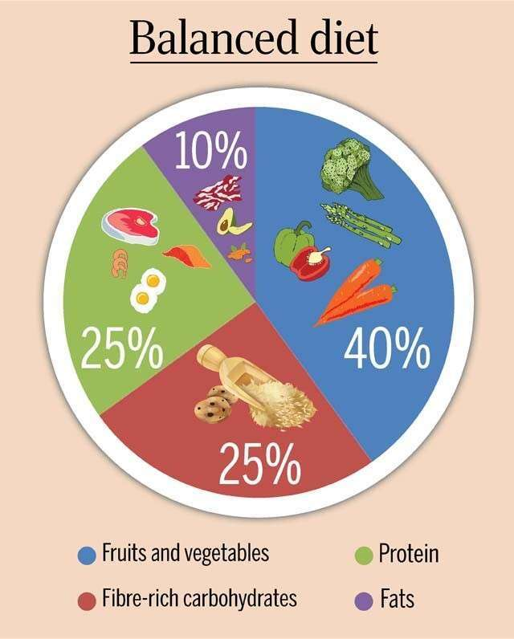
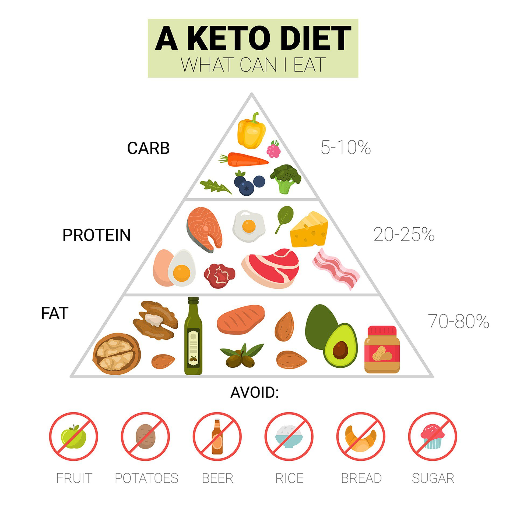
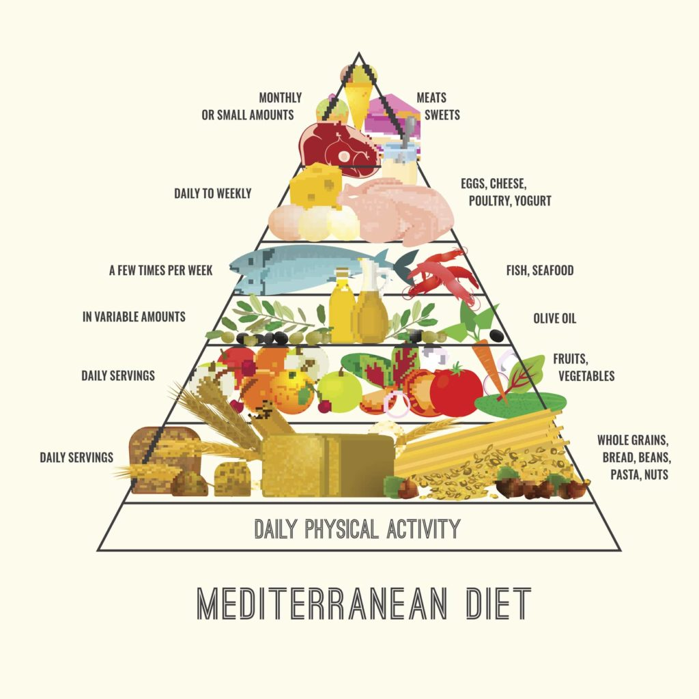
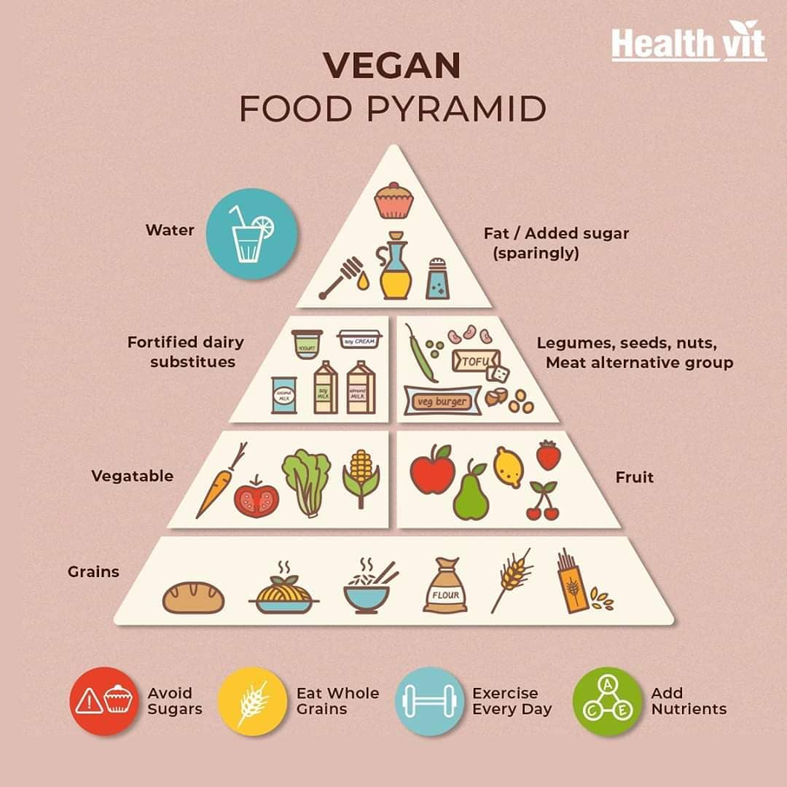
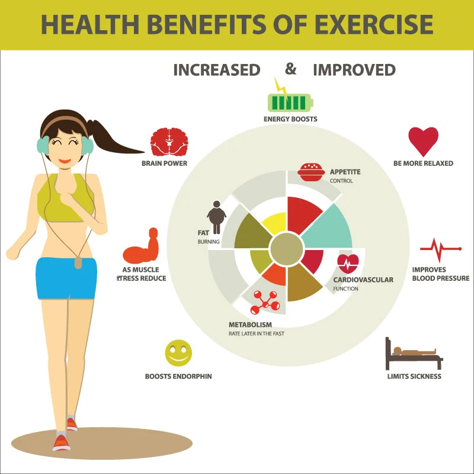
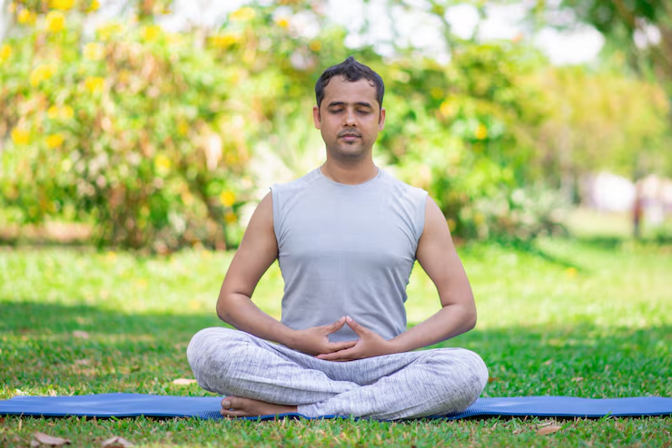

Nutrition & Wellness
Fuel your body right with science-backed nutrition guidance and wellness coaching
Nutrition, Health, and Your Environment
What we eat is considered an environmental factor that influences health, in positive and negative ways. Healthy diets with an optimal balance of nutrients help people accomplish daily physical activities and mental processes. Within your diet, a deficiency or excess of certain nutrients can affect health.
What Are Nutrients?
Nutrients give your body energy and enable bodily functions. They are usually classified in two major groups:
- Macronutrients - the nutrients your body needs in large amounts. With the exception of water, these are the only substances that provide calories (energy).
- Carbohydrates:These are the body’s preferred fuel source. They are broken down into glucose, which powers everything from your muscles during a workout to your brain’s ability to concentrate.
- Proteins:Often called the "building blocks" of the body, proteins are essential for creating and repairing muscles, skin, organs, and enzymes. They are made up of amino acids.
- Fats:While often misunderstood, fats are vital for long-term energy storage, protecting your organs, maintaining cell membranes, and helping your body absorb certain vitamins.
- Water:Though it contains no calories, water is frequently classified as a macronutrient because you need it in large quantities to regulate temperature, lubricate joints, and flush out waste.
- Micronutrients - Micronutrients are required in much smaller doses—often measured in milligrams or micrograms—but they are no less important. They do not provide energy directly, but without them, the body cannot process macronutrients.
- Water-soluble (e.g., Vitamin C and B-complex):These travel through the bloodstream and need to be replaced daily.
- Fat-soluble (A, D, E, and K):These are stored in the body’s fatty tissue for later use.
- Macrominerals:Elements like calcium, potassium, and magnesium that you need in larger amounts for bone health and nerve function.
- Trace Minerals:Elements like iron, zinc, and iodine that are needed in tiny amounts but are crucial for tasks like carrying oxygen in the blood.
Vitamins
Vitamins are organic compounds (made by plants or animals) that help regulate metabolism and support the immune system.
Minerals
Minerals are inorganic elements that come from the earth or water and are absorbed by plants or eaten by animals.

Popular Diet Types

🥗 Balanced Diet
A balanced diet provides all essential nutrients by combining fruits, vegetables, lean proteins, whole grains, and healthy fats in the right proportions. By prioritizing variety and nutrient-dense foods over processed items, you ensure your body has the fuel and minerals needed for optimal energy, immunity, and long-term health.

🥑 Keto Diet
The keto diet shifts the body's metabolism from burning glucose to burning fat by drastically reducing carbohydrates and increasing fat intake. This process, known as ketosis, turns the liver into a fat-burning machine, providing a steady energy source for the brain and body while aiding in weight management.

🌿 Mediterranean
The Mediterranean diet emphasizes plant-based foods, healthy fats like olive oil, and lean proteins like fish to support cardiovascular wellness. By focusing on whole grains, legumes, and fresh produce while limiting processed sugars, it provides a sustainable way to reduce inflammation and promote long-term heart health.

🌱 Vegan & Vegetarian
Vegan and vegetarian diets focus on plant-based foods like legumes, grains, and vegetables to promote ethical and environmental health. While vegetarians avoid meat, vegans exclude all animal-derived products, both relying on nutrient-dense whole foods to provide essential fiber, vitamins, and minerals for a sustainable lifestyle.
Exercise & Fitness Benefits

Why Exercise Matters
Regular physical activity is crucial for maintaining overall health and wellness:
- Strengthens heart and cardiovascular system
- Improves mental health and mood
- Helps maintain healthy weight
- Increases energy and stamina
- Reduces risk of chronic diseases
- Enhances bone strength and density
Wellness & Mental Health
😌 Stress Management
Stress management involves using physical activity, breathing exercises, and healthy habits to reduce cortisol levels and strengthen emotional resilience. By incorporating regular exercise to release endorphins and quiet reflection to steady the nervous system, you can effectively counteract the physical and mental strain of daily pressures for a more balanced life.
😴 Quality Sleep
Quality sleep involves maintaining a consistent schedule of 7–9 hours to allow the body to complete essential restorative cycles. During this time, the brain processes information and repairs tissues, while the nervous system resets, ensuring you wake up with the mental clarity and physical energy required for peak daily performance.

🧘 Meditation
Meditation is a dedicated practice of focusing the mind to cultivate deep calm and heightened awareness. By training the brain to remain present and observe thoughts without judgment, you can lower physiological stress markers and sharpen your concentration, leading to significantly reduced anxiety and improved emotional stability throughout your daily routine.
🌟 Mindfulness
Mindfulness is the practice of intentionally grounding your attention in the present moment to better understand and manage your internal reactions. By observing your physical sensations and thoughts with curiosity rather than criticism, you create a mental space that allows you to respond to challenges thoughtfully instead of reacting impulsively, ultimately strengthening your emotional resilience.